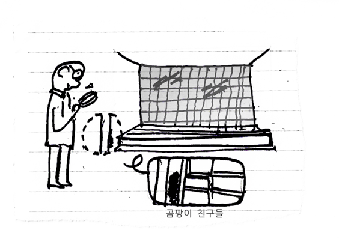
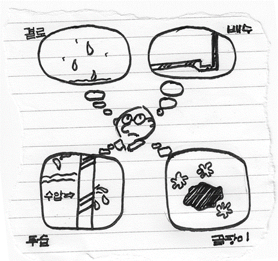

크리스찬 건축쟁이로서,많은 건축적 문제 중 지하층 건축에 대한 몇 가지 윤리적 고민을 공유하고자 합니다. 건축가로서, 우리는 공간을 디자인하고 조성하는 과정에서 실내의 내부 환경과 인간의 안전에 대한 책임을 가지게 됩니다.
전회 에서 다수의 교회당의 경우 크고 화려한 교회당에 대한 고민을 털어놨었습니다. 과대설계가 우리 교회가 지향하는 방향이 아님을 글로 적어 내렸습니다. 하지만 어쩔 수 없이, 지하층을 이용해야 하는 경우가 있습니다. 건축면적상, 건축법상 좁은 땅에 교회당을 지어야 된다면 지하를 고려 할 수 밖에 없습니다.
하지만 지하층은 ‘건축물유지관점’으로 많은 문제점이 있고, 아직 해결 하지 못한 문제들로 인해 교인의 건강에 문제가 생길 수도 있고, 재정적으로도 문제가 많습니다.
보통의 건물의 지상 1층 건설하는데 비해 공정상으로 지하의 건축비용은 비해 작게 1.5배에서 2.5배 정도 듭니다. 마찬가지로 유지비용도 그에 걸맞게 금액이 들어갑니다. 그렇기 때문에 교회재정을 사용하는데 앞서서 지하층이 꼭 필요한지 고민해 볼 필요가 있습니다.

지하 공간을 건축할 때, 적절한 방수 및 배수 시스템을 설계해야 합니다. 지하 콘크리트벽면 및 바닥을 방수 처리하고, 비가 들어오는 것을 방지해야 합니다. 하지만 방수란 것은 항상 완벽하지 않습니다.
지하 예배당의 조그마한 금에서도 물이 쏱아 지는 것을 보신적이 있으실 것입니다. 결로도 두말 하면 잔소리일 정도로 지하 예배당의 심각한 문제입니다. 방수 자체로만은 절대 완벽하지 않습니다. 그래서 2차 3차 방수를 해야 하고, 더 나아가 혹시 모를 누수에 벽에는 배수관련 한 작은 물길 등 고려 해야 합니다.
방수 및 배수가 잘 되어도 문제는 완전히 해결되지 않습니다. 통기가 제대로 되지 않으면 작은 습기도 곰팡이로 이어집니다. 그렇기 때문에 많은 지하층은 특유의 "쿰쿰한 곰팡이 포자" 냄새가 있습니다. 이것은 알레르기 및 호흡기 질환을 일으키니거나 무좀 같은 피부염을 유발하고 악화시킵니다.
이것은 건강에 해를 끼치기 때문에 교회의 일원으로서 교회의 다른 가족들을 이런 환경에 노출 시키는 것은 옳지 않다 생각합니다. 사람이 살아서도 안 될 공간이고, 예배를 위해 오랜 시간 모여 있어도 안될 환경이라는 것입니다.
이런 지하실의 구조적 원인을 제거하기 위해서는 ‘제습 이거나 단열’에 힘을 기울여야 합니다. 환기를 시켜 벽과 온도의 차이를 없어지게 하거나(단열), 제습기를 틀어서 습기를 없애는 방법입니다.(제습) 하지만 이러한 방법에는 응당 대가가 따릅니다.

안 밖으로 단열재를 두껍게 하여야 합니다. 이 것은 기밀성과 정밀성을 요합니다. 실크기의 틈이 있어도 결로가 생겨 결국 단열재의 탈락으로 이어질 수 있기 때문에 많은 건축 시공자가 부담을 않고 시공하기를 꺼려 합니다. 시공은 할 수 있어도 책임지기가 힘들기 때문입니다. 공사금액은 올라갑니다.
제습 또한 마찬가지 입니다. 제습기는 에어컨과 거의 비슷한 전기가 들어갑니다. 또한 실내 공기를 따뜻하게 만듭니다. 많은 사람들이 들어왔다 나가는 대공간 일 경우 사람들이 내뿜는 숨과 이들이 가지고 오는 습기로 인해 습도가 갑자기 올라가기도 합니다. 이런 이유들 때문에 충분할 제습에는 언제나 한계가 있습니다.
요약하자면 특별하게 건축의 면적의 한계상 어쩔 수 없이 지하를 하게 되는 경우 가장 이상적인 방법은 벙커를 만들어 지하층에 햇빛이 들게 하는 등 막대한 재정을 투입하는 것입니다. 그렇게 하더라도 곰팡이를 막는 습기 제거에 대한 방법 물리적으로 완벽할 수 없습니다. 그렇기 때문에 되도록이면 지하층은 지양해야 합니다. 교회당이나 모임을 주로 하는 교회에서는 문을 닫아두고 밀폐된 상황에서 사용하기 때문에, 환기를 통해 습도조절도 어렵습니다. 지하는 날씨와 상관없이 벽체의 온도는 변하지 않기 때문에 결로는 아주 잘 관리 하더라도 여름이 되면 취약할 수 밖에 없습니다.
만약에 주변에 누군가가 지금 교회시작하신다면 꼭 지하층을 사용하는 것을 고민해보라고 말씀해주세요.
**
하나님께서 하루 하루 살려 주셔서 이 글을 쓸 수 있는 건축가 르듀종 입니다. 이 모든 지식은 하나님께서 저에게 주셨고, 삶도 그분 덕에 살아갑니다. 이 글의 감사는 오롯이 하나님께서 영광으로 돌려드립니다. 혹시 교회나 집에서 결로로 인해 자문을 원하신다면 언제든지 메일이나 전화 주시면 상담해드립니다! 재정적으로는 힘드나 언제나 상담은 무료입니다! 저의 말로 위로나 기숙적으로 해결이 될 수 있다면 저는 언제나 감사하게 생각합니다! 걱정 없이 사소한 것으로 메일 주셔도 됩니다! 힘이 될 수 있다면 모든 영광은 하나님께 돌려드립니다!
글 르듀종